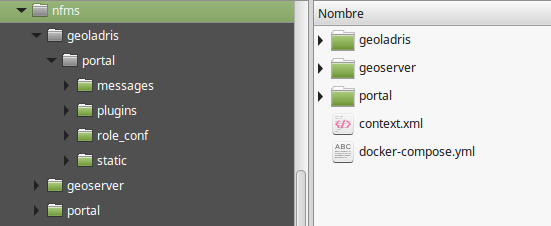

Preparación
Para este curso haremos uso de Docker. Docker es una herramienta que nos va a permitir la instalación completa de todos los componentes del sistema de NFMS (PostGIS, GeoServer, portal) en unos pocos minutos y con muy pocos comandos.
Instalar Docker
La instalación de Docker es diferente en función del sistema operativo. Aquí se muestra el resumen de las posibilidades más comunes.
Si el sistema operativo no se encuentra entre los siguientes, habrá que dirigirse a la documentación de Docker.
En caso de ser incapaz de instalar Docker de manera nativa en nuestro sistema, siempre se puede crear una máquina virtual Ubuntu con VirtualBox (a partir de imágenes predefinidas, por ejemplo) e instalar Docker en la máquina virtual.
Ubuntu 16.04 (o posterior)
Se pueden encontrar unas instrucciones más detalladas en la instalación en su web. Básicamente consiste en:
# Instalar dependencias apt-get update apt-get install apt-transport-https ca-certificates curl software-properties-common # Añadir la clave GPG curl -fsSL https://download.docker.com/linux/ubuntu/gpg | sudo apt-key add - # Añadir el repositorio apt sudo add-apt-repository "deb [arch=amd64] https://download.docker.com/linux/ubuntu $(lsb_release -cs) stable" # Instalar apt-get update apt-get install docker-ce
Windows 10
Se pueden encontrar unas instrucciones más detalladas en la instalación en su web. Básicamente consiste en:
- Descargar el instalador y ejecutarlo.
- Arrancar
Docker for Windows. - Una vez se ha terminado la inicialización se abrirá una consola con el símbolo
$. Basta con ejecutardocker run hello-worldpara comprobar que la instalación ha sido satisfactoria.
Windows 7
La última versión de Docker para Windows solo está disponible a partir de Windows 10. Para utilizar Docker en versiones anteriores de Windows habrá que usar Docker Toolbox. Básicamente consiste en:
- Descargar el instalador y ejecutarlo.
- Abrir
Docker Quickstart(por defecto se instala un icono en el escritorio). La primera vez que se abra necesitará ejecutar unos cuantos pasos de configuración inicial que pueden tomar un tiempo y que requieren permisos especiales que habrá que aceptar. - Una vez se ha terminado la inicialización se abrirá una consola con el símbolo
$. Basta con ejecutardocker run hello-worldpara comprobar que la instalación ha sido satisfactoria.
Instalar docker-compose
docker-compose es una herramienta de Docker que nos permite ejecutar, enlazar y en general gestionar varios contenedores de manera conjunta y sencilla.
Linux
La instalación en Linux es muy sencilla. Basta con descargarlo y darle permisos de ejecución:
curl -L https://github.com/docker/compose/releases/download/1.18.0/docker-compose-`uname -s`-`uname -m` -o /usr/local/bin/docker-compose chmod +x /usr/local/bin/docker-compose docker-compose --version
Windows
En Windows, docker-compose viene instalado tanto con Docker for Windows como con Docker Toolbox, por lo que no será necesario realizar nada más.
Otros sistemas operativos
Si el sistema operativo no se encuentra entre los anteriores, habrá que dirigirse a la documentación de Docker.
Arrancar el sistema
En primer lugar deberemos crear nuestro directorio de trabajo, que incluye subdirectorios para GeoServer y el portal. Por ejemplo:
cd
mkdir nfms
mkdir nfms/geoserver
mkdir nfms/geoladris
NOTA: A lo largo de esta documentación se incluirán únicamente los comandos
mkdirde Linux, asumiendo que en Windows se crean mediante el explorador de archivos.
Después, habrá que descargarse los siguientes ficheros y copiarlos en el directorio de trabajo:
Tras la descarga, habrá que descomprimir el fichero demo-*.war (realmente es un fichero .zip con la extensión cambiada) en un directorio portal y descomprimir el fichero portal.zip dentro del directorio de configuración geoladris. El resultado debería ser el siguiente:

Finalmente, bastará con arrancar el sistema con docker-compose:
cd ~/nfms
docker-compose up -d
O, en Windows, arrancando Docker for Windows/Docker Toolbox:
cd <directorio>
docker-compose up -d
Para comprobar que la instalación y el arranque se han completado con éxito podemos acceder al portal en http://localhost:8082/portal y a GeoServer en http://localhost:8081/geoserver.